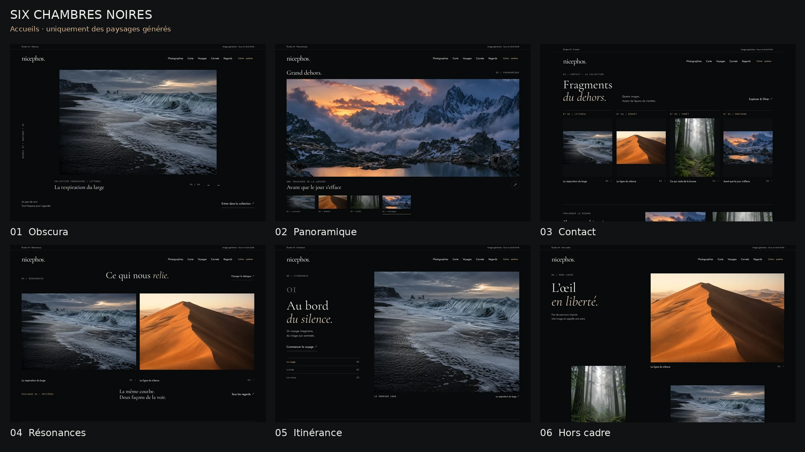

ÉTUDES V4 · EXPORTS WEBP
Six façons d’habiter le noir.
Tout le parcours, en images.
Uniquement des images générées. Aucun média du site. Paysages, textes et géographie fictifs. 202 captures et 15 planches ; les fichiers individuels montrent les pages entières, sauf les agrandissements, menus et fenêtres modales.

Les planches montrent le début de chaque écran. Ouvrez les WebP individuels pour voir les pages en entier, notamment les cartes, connexes et étapes sous le premier écran.
Obscura
31 captures · ordinateur et téléphone


Ordinateur · 1440 px — tous les écrans
- Accueil 1440 × 1785
- Galerie 1440 × 1740
- Photo, carte et connexes 1440 × 1774
- Photo verticale 1440 × 1774
- Agrandissement 1440 × 1000
- Carte des images 1440 × 1790
- Les voyages 1440 × 1515
- Un voyage, trois étapes 1440 × 3216
- Les Carnets 1440 × 1052
- Carnet : ralentir 1440 × 2260
- Carnet : l’ombre 1440 × 2177
- Les deux regards 1440 × 1897
- Nous écrire 1440 × 1388
- Recherche filtrée 1440 × 1260
- Recherche sans résultat 1440 × 1159


Téléphone · 390 px — tous les écrans
- Accueil 390 × 1994
- Galerie 390 × 2207
- Photo, carte et connexes 390 × 1771
- Photo verticale 390 × 2059
- Agrandissement 390 × 844
- Carte des images 390 × 2101
- Les voyages 390 × 1198
- Un voyage, trois étapes 390 × 2901
- Les Carnets 390 × 1757
- Carnet : ralentir 390 × 2479
- Carnet : l’ombre 390 × 2362
- Les deux regards 390 × 2443
- Nous écrire 390 × 1859
- Recherche filtrée 390 × 1076
- Recherche sans résultat 390 × 1135
- Navigation mobile 390 × 844


Panoramique
31 captures · ordinateur et téléphone


Ordinateur · 1440 px — tous les écrans
- Accueil 1440 × 1821
- Galerie 1440 × 2414
- Photo, carte et connexes 1440 × 1874
- Photo verticale 1440 × 1874
- Agrandissement 1440 × 1000
- Carte des images 1440 × 2502
- Les voyages 1440 × 1599
- Un voyage, trois étapes 1440 × 4065
- Les Carnets 1440 × 1452
- Carnet : ralentir 1440 × 2260
- Carnet : l’ombre 1440 × 2177
- Les deux regards 1440 × 1892
- Nous écrire 1440 × 1382
- Recherche filtrée 1440 × 1444
- Recherche sans résultat 1440 × 1154


Téléphone · 390 px — tous les écrans
- Accueil 390 × 2171
- Galerie 390 × 2175
- Photo, carte et connexes 390 × 1771
- Photo verticale 390 × 2059
- Agrandissement 390 × 844
- Carte des images 390 × 2101
- Les voyages 390 × 1321
- Un voyage, trois étapes 390 × 2980
- Les Carnets 390 × 1767
- Carnet : ralentir 390 × 2479
- Carnet : l’ombre 390 × 2362
- Les deux regards 390 × 2443
- Nous écrire 390 × 1859
- Recherche filtrée 390 × 1125
- Recherche sans résultat 390 × 1135
- Navigation mobile 390 × 844


Contact
31 captures · ordinateur et téléphone


Ordinateur · 1440 px — tous les écrans
- Accueil 1440 × 1645
- Galerie 1440 × 1149
- Photo, carte et connexes 1440 × 1826
- Photo verticale 1440 × 1826
- Agrandissement 1440 × 1000
- Carte des images 1440 × 1830
- Les voyages 1440 × 1462
- Un voyage, trois étapes 1440 × 3400
- Les Carnets 1440 × 1026
- Carnet : ralentir 1440 × 2256
- Carnet : l’ombre 1440 × 2173
- Les deux regards 1440 × 1844
- Nous écrire 1440 × 1335
- Recherche filtrée 1440 × 1149
- Recherche sans résultat 1440 × 1106


Téléphone · 390 px — tous les écrans
- Accueil 390 × 2383
- Galerie 390 × 1397
- Photo, carte et connexes 390 × 1819
- Photo verticale 390 × 2107
- Agrandissement 390 × 844
- Carte des images 390 × 2178
- Les voyages 390 × 1336
- Un voyage, trois étapes 390 × 3033
- Les Carnets 390 × 1840
- Carnet : ralentir 390 × 2477
- Carnet : l’ombre 390 × 2360
- Les deux regards 390 × 2474
- Nous écrire 390 × 1890
- Recherche filtrée 390 × 1097
- Recherche sans résultat 390 × 1166
- Navigation mobile 390 × 844


Résonances
31 captures · ordinateur et téléphone


Ordinateur · 1440 px — tous les écrans
- Accueil 1440 × 1736
- Galerie 1440 × 1931
- Photo, carte et connexes 1440 × 1927
- Photo verticale 1440 × 1927
- Agrandissement 1440 × 1000
- Carte des images 1440 × 1757
- Les voyages 1440 × 1465
- Un voyage, trois étapes 1440 × 3216
- Les Carnets 1440 × 1290
- Carnet : ralentir 1440 × 2260
- Carnet : l’ombre 1440 × 2177
- Les deux regards 1440 × 1847
- Nous écrire 1440 × 1338
- Recherche filtrée 1440 × 1328
- Recherche sans résultat 1440 × 1109


Téléphone · 390 px — tous les écrans
- Accueil 390 × 2147
- Galerie 390 × 1363
- Photo, carte et connexes 390 × 1771
- Photo verticale 390 × 2059
- Agrandissement 390 × 844
- Carte des images 390 × 2101
- Les voyages 390 × 1305
- Un voyage, trois étapes 390 × 2901
- Les Carnets 390 × 1807
- Carnet : ralentir 390 × 2479
- Carnet : l’ombre 390 × 2362
- Les deux regards 390 × 2443
- Nous écrire 390 × 1859
- Recherche filtrée 390 × 1069
- Recherche sans résultat 390 × 1135
- Navigation mobile 390 × 844


Itinérance
31 captures · ordinateur et téléphone


Ordinateur · 1440 px — tous les écrans
- Accueil 1440 × 1725
- Galerie 1440 × 2710
- Photo, carte et connexes 1440 × 1774
- Photo verticale 1440 × 1774
- Agrandissement 1440 × 1000
- Carte des images 1440 × 1798
- Les voyages 1440 × 1465
- Un voyage, trois étapes 1440 × 3216
- Les Carnets 1440 × 1407
- Carnet : ralentir 1440 × 2260
- Carnet : l’ombre 1440 × 2177
- Les deux regards 1440 × 1847
- Nous écrire 1440 × 1338
- Recherche filtrée 1440 × 1225
- Recherche sans résultat 1440 × 1109


Téléphone · 390 px — tous les écrans
- Accueil 390 × 2251
- Galerie 390 × 2499
- Photo, carte et connexes 390 × 1771
- Photo verticale 390 × 2059
- Agrandissement 390 × 844
- Carte des images 390 × 2111
- Les voyages 390 × 1356
- Un voyage, trois étapes 390 × 2901
- Les Carnets 390 × 1767
- Carnet : ralentir 390 × 2479
- Carnet : l’ombre 390 × 2362
- Les deux regards 390 × 2443
- Nous écrire 390 × 1859
- Recherche filtrée 390 × 1176
- Recherche sans résultat 390 × 1186
- Navigation mobile 390 × 844


Hors cadre
31 captures · ordinateur et téléphone


Ordinateur · 1440 px — tous les écrans
- Accueil 1440 × 2578
- Galerie 1440 × 2728
- Photo, carte et connexes 1440 × 1774
- Photo verticale 1440 × 1774
- Agrandissement 1440 × 1000
- Carte des images 1440 × 1888
- Les voyages 1440 × 1503
- Un voyage, trois étapes 1440 × 2679
- Les Carnets 1440 × 1448
- Carnet : ralentir 1440 × 2260
- Carnet : l’ombre 1440 × 2177
- Les deux regards 1440 × 2035
- Nous écrire 1440 × 1376
- Recherche filtrée 1440 × 1388
- Recherche sans résultat 1440 × 1147


Téléphone · 390 px — tous les écrans
- Accueil 390 × 2663
- Galerie 390 × 1760
- Photo, carte et connexes 390 × 1771
- Photo verticale 390 × 2059
- Agrandissement 390 × 844
- Carte des images 390 × 2121
- Les voyages 390 × 1325
- Un voyage, trois étapes 390 × 2901
- Les Carnets 390 × 1768
- Carnet : ralentir 390 × 2479
- Carnet : l’ombre 390 × 2362
- Les deux regards 390 × 2463
- Nous écrire 390 × 1879
- Recherche filtrée 390 × 1096
- Recherche sans résultat 390 × 1155
- Navigation mobile 390 × 844


Administration commune
16 captures · ordinateur et téléphone


Ordinateur · 1440 px — tous les écrans
- Photothèque 1440 × 1000
- Fiche photo 1440 × 1000
- Voyages et sorties 1440 × 1000
- Nouvelle sortie 1440 × 1072
- Édition du Carnet 1440 × 1058
- Confirmation de publication 1440 × 1000
- À vérifier 1440 × 1000
- Réglages regroupés 1440 × 1044


Téléphone · 390 px — tous les écrans
- Photothèque 390 × 1497
- Fiche photo 390 × 844
- Voyages et sorties 390 × 1360
- Nouvelle sortie 390 × 1479
- Édition du Carnet 390 × 1392
- Confirmation de publication 390 × 844
- À vérifier 390 × 1066
- Réglages regroupés 390 × 1999


Périmètre, lecture et vérifications · Provenance des quatre images · Manifeste de tous les exports